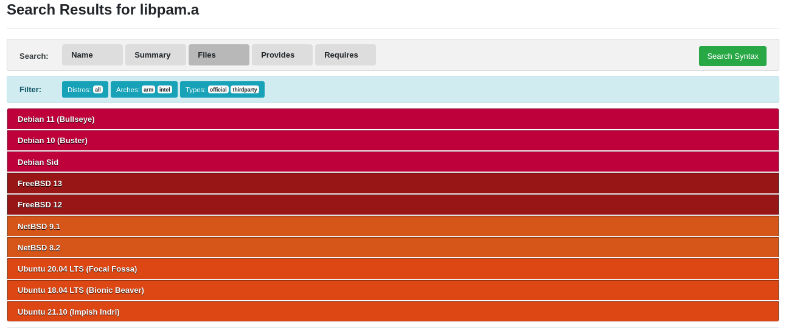

PAM stands for Pluggable Authentication Module and its purpose from my understanding
is to separate application developers from writing an authentication scheme into their
program. Think of it as an authentication “API” for “privilege granting” applications but
is flexible how each application authenticates the user. System administrators
are given the control and decision to how each application authenticates a user by modifying
PAM configs (policies) that could be found in locations such as /etc/pam.d (location may vary depending
on the OS).
intended that an application treat the functions documented here as a ‘black box’ that will deal with all aspects of user authentication Linux PAM - 1.1 Description
As stated in Linux PAM documentation, developers do not need to know how the authentication works.
That is the beauty of PAM. But how do you know what applications are “PAM-Aware” (a term to refer
to whether the application utilizes PAM for authentication)? According to TechMint,
one would just need to check whether or not a program is linked to libpam.so (the dynamic library for the PAM library).
This would indeed be true for Linux, or at least that is how it should work nowdays.
To find a list of “PAM-aware” applications, you could check what PAM policies are packaged in your distribution under /etc/pam.d. However,
the best method on Linux is to use ldd to see if the application dynamically links to the PAM library as stated previously.
$ ldd `which su` | grep libpam
libpam.so.0 => /lib64/libpam.so.0 (0x00007f4f305cf000)
libpam_misc.so.0 => /lib64/libpam_misc.so.0 (0x00007f4f305c9000)
But are all “PAM-aware” applications dynamically linked to libpam?
There are various implementations of PAM such as Linux PAM and OpenPAM where the latter can be found in FreeBSD, macOS (as of Snow Leopard),
and QNX. Although I could not find any documentation regarding the implementation of AIX’s pam library, the documentation for AIX 7.3 (the
latest version at the time of writing) states the following:
The PAM library,/usr/lib/libpam.a, contains the PAM API that serves as a common interface to all PAM applications and also controls module loading. PAM library

This would mean that the solution proposed will not apply to AIX as the PAM libraries are not dynamically linked to the applications
(unless the .a extension means nothing to them). Unfortunately, I no longer have access to an AIX machine so I cannot confirm the details.
So how would one go about figuring out whether the application is “PAM aware” in this scenario? If you are lucky or an insider, you may be
able to view the source code of the application in question to see if they include the PAM libraries (i.e. #include <security/pam_appl.h> in
case of Linux PAM). The alternative and more feasible method is to check the binary itself if it includes the PAM symbols. This can be done
using the strings utility or nm utility.
$ strings su | grep pam pam_open_session pam_close_session pam_set_item pam_setcred pam_start pam_strerror pam_acct_mgmt pam_getenvlist pam_chauthtok pam_end pam_authenticate libpam.so.0 libpam_misc.so.0
However, if the symbols are stripped, you probably won’t have much success with nm:
$ nm su
nm: su: no symbols
But if the binary was not stripped of its symbols, you could use nm to determine
if the application is “PAM-aware” and whether the application is statically or dynamically
linked by seeing if the symbols are undefined (i.e. if pam functions are undefined, then
it’s dynamically linked). Some UNIX-like OS and distributions do
package the static library version of libpam along with the shared library. Whether it’s
being used or not is not something I know. But it would be application-dependent because
some developers may still statically link their applications with libpam.a.

Before I conclude today’s post, I want to comment on why strings utility still has PAM symbols even though the
binary was stripped. strings utility is useful to see all the printable strings in a file.
My assumption is that the pam functions cannot be stripped from the binary (i.e. such as the relocation section) to allow the dynamic
linker to know what library and symbols it needs to link and bind to before executing the program.
strip does have an option to strip the relocation data but the man pages caution this as it
may make the output file unusable.
Conclusion
On modern Linux systems, use ldd to see if libpam.so is be linked to the application. However, some distributions
and other UNIX-like OS may allow statically linking to libpam so use strings if you suspect the application must
be utilizing PAM.